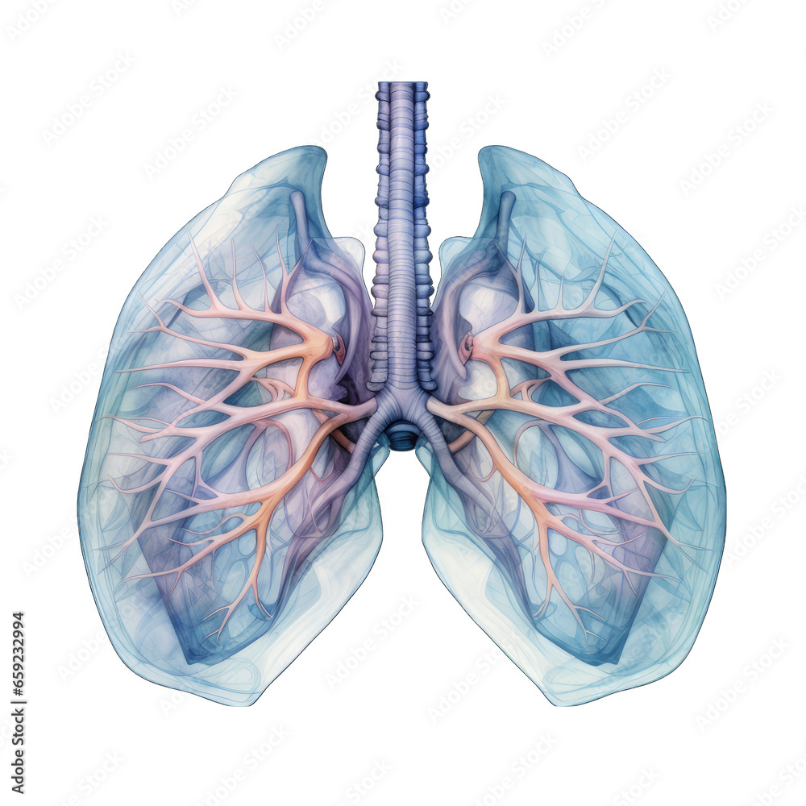
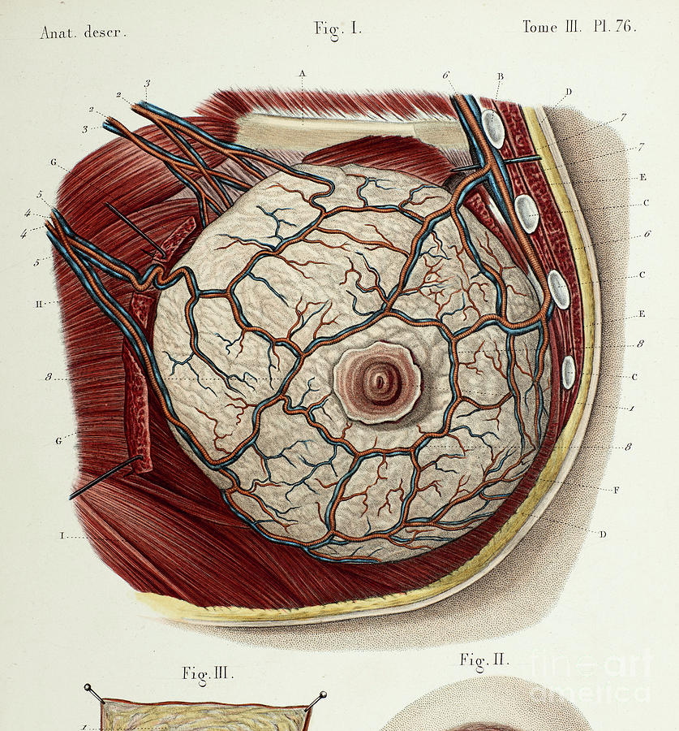

AI Diagnosis Tools
Choose from our advanced AI-powered diagnostic tools for accurate health risk assessments.

98% Accuracy
Lung Cancer Risk Assessment
Evaluate your risk of lung cancer using our advanced AI model that analyzes various symptoms and lifestyle factors.
Start Assessment

96% Accuracy
Breast Cancer Risk Assessment
Get a comprehensive breast cancer risk evaluation based on diagnostic measurements using state-of-the-art machine learning.
Start Assessment